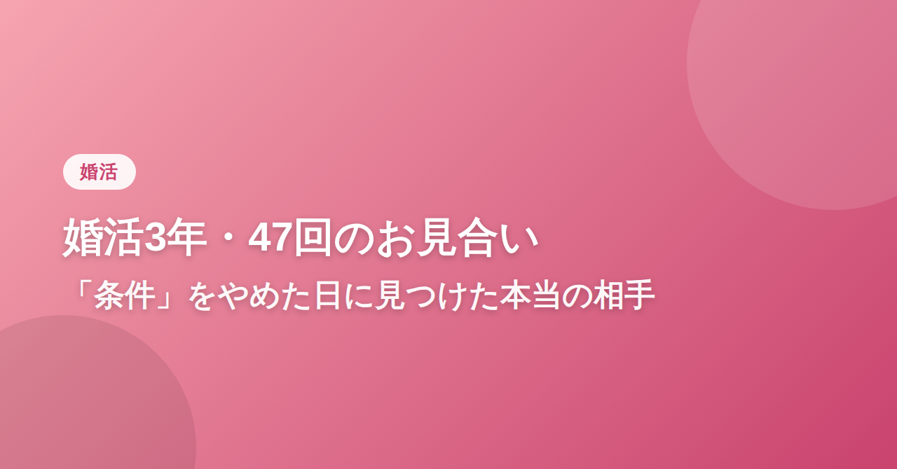
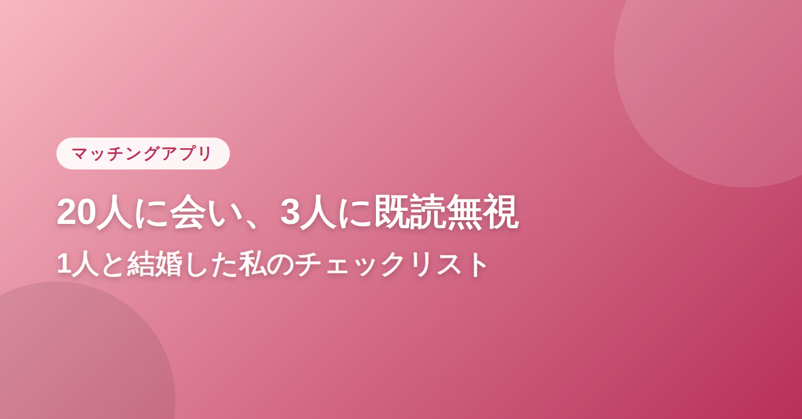
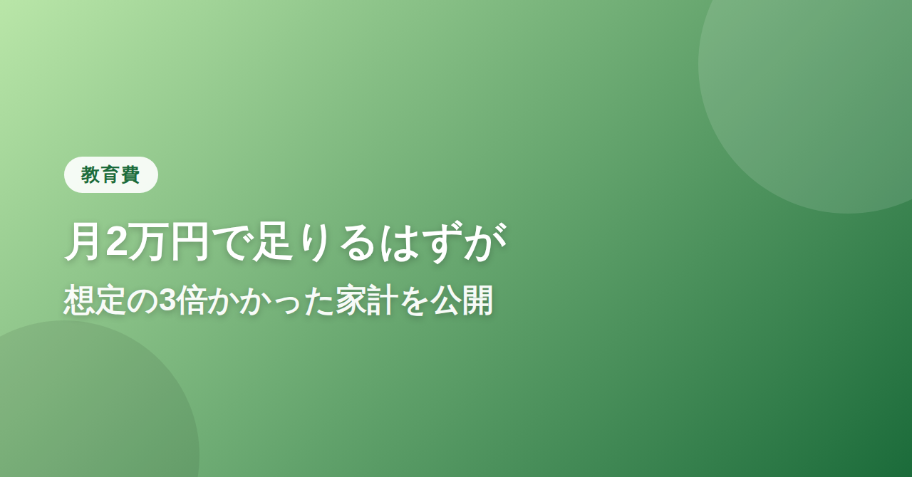
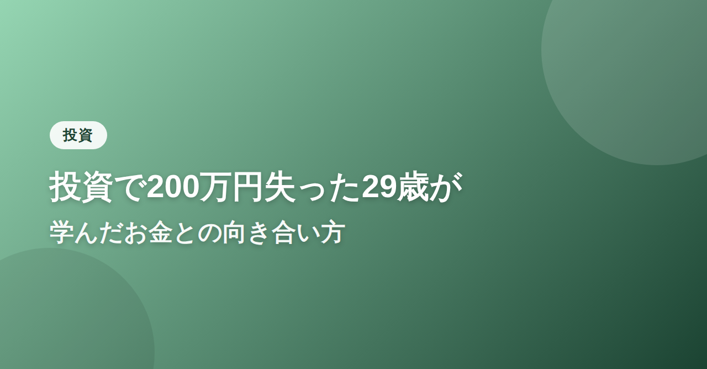
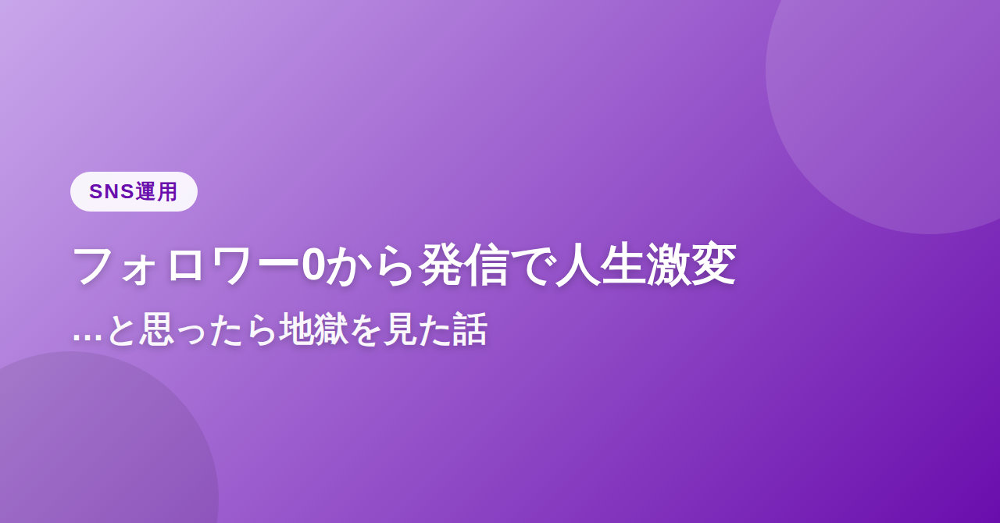
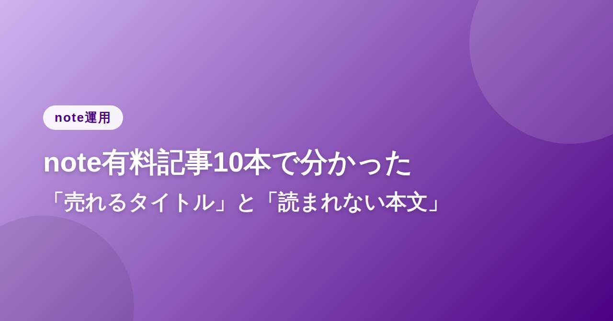

34歳の誕生日、友人からの「そろそろ焦った方がいいよ」の一言で、私の婚活は始まりました。
年収600万円以上、身長175cm以上、できれば大卒。スプレッドシートに条件をまとめて、婚活アプリに登録した日のことを今でも覚えています。効率よく、最短距離で「結婚」というゴールにたどり着くつもりでした。
最初の半年は順調でした。マッチング数は多く、お見合いパーティーにも毎週のように参加しました。プロフィール写真は写真館で撮り直し、自己紹介文もプロに添削してもらいました。傍から見れば、婚活を「攻略」しているように見えたと思います。
条件を満たした相手ほど、なぜか続かなかった
不思議なことに、条件をクリアした相手との交際ほど長続きしませんでした。3回目のデートあたりで、決まって同じ違和感がやってきます。「この人と一緒にいて、素の自分でいられているだろうか」。
年収も身長も申し分ない商社勤務の男性とは、4ヶ月お付き合いしました。周りには「いい人と付き合えてよかったね」と言われ続け、自分でもそう思い込もうとしていました。でも、彼の前では常に少し背伸びをしていた気がします。別れを切り出したのは私からでした。理由を聞かれても、うまく言葉にできませんでした。
婚活パーティーの回数は増えていく一方で、心はどんどんすり減っていきました。47回目のパーティー会場で、隣に座った初対面の女性から「またこの会場だ」と苦笑いされたとき、自分が「婚活のプロ」になってしまったことに気づいて愕然としました。
2年目、心が折れた夜
2年が過ぎた頃、心療内科に通い始めました。不眠と、原因不明の胃の痛み。医師には「婚活疲れ」と言われました。笑い話のようですが、当時の私にとっては深刻でした。
母には「あなたは選びすぎ」と言われ、友人には「もう少しハードル下げたら」と言われ、自分でもそう思おうとしましたが、条件を下げる=妥協する、という感覚がどうしても拭えませんでした。
条件を下げること＝自分を安売りすること。そんな思い込みに、当時の私はがんじがらめになっていたのだと思います。
条件のリストを、初めて全部消した日
3年目のある夜、婚活アプリのプロフィールを開いて、条件のチェックボックスを全部外しました。年収、身長、学歴、居住地。何も残らないくらいまっさらにして、代わりに自己紹介文にこう書きました。「平日は仕事に本気で、休日は近所の喫茶店で本を読むのが好きです。将来のことより、まず今日を楽しく話せる人と出会いたいです」。
我ながら拍子抜けするくらい普通の文章でした。でも、条件で武装するのをやめたその文章に返信をくれたのが、今の夫でした。
彼は正直、私が以前作っていたスプレッドシートの条件には一つも当てはまりませんでした。年収は平均的で、身長も特別高くはなく、勤め先も知らない中小企業でした。それでも、初めて会った喫茶店で3時間話し続けても、一度も「疲れる」と感じなかったのです。
条件で選んでいたときの私は、相手を「採点」していました。でも彼との時間は、採点ではなく会話でした。その違いに気づいたとき、これまでの3年間、自分が何を探していたのか本当の意味でわかった気がしました。
妥協ではなく、納得だった
周りには「よく妥協したね」と言われることもあります。でも私の中で、これは妥協ではなく納得です。条件のリストと引き換えに、「一緒にいて疲れない」という、一番シンプルで一番大事な基準を手に入れたのだと思っています。
もし今、条件のスプレッドシートを埋めながら婚活をしているあなたがいたら伝えたいことがあります。条件は、相手を選ぶための便利な道具ではあっても、幸せを保証するものではありません。私が本当に相手を見つけられたのは、条件を数える手を止めて、目の前の人の話をただ聞いた瞬間でした。
47回のパーティーと3年の遠回りは、無駄ではありませんでした。むしろ、あの遠回りがなければ、条件を手放す勇気は持てなかったと思います。婚活に疲れているすべての人に、少しでもこの話が力になれば嬉しいです。
（本エピソードはフィクションです。実在の人物・団体とは関係ありません）

「マッチングアプリで結婚した」と話すと、今でも「怖くなかった?」と聞かれます。正直に言うと、怖かったです。1人目に会うまでの1週間、何度もアプリを消そうか迷いました。
29歳、地方都市在住、周りに独身の友人がほとんどいなくなった頃、私はマッチングアプリを始めました。最初の壁は「メッセージのやり取りだけで疲れる」ことでした。同じような自己紹介文、同じような質問。3日で心が折れそうになりました。
会うたびに、少しずつ「型」ができていった
1人目は、待ち合わせ場所に15分遅刻してきて、謝罪の一言もありませんでした。2人目は、会って早々にマルチ商法の勧誘だと分かり、会計を待たずに帰りました。3人目にはデート後、メッセージを送っても既読すら付かなくなりました。
正直、5人目あたりで心が消耗しきっていました。「これを繰り返して本当に結婚相手が見つかるのだろうか」と、何度もアプリの削除ボタンに指をかけました。
でも、会った人数が増えるごとに、自分の中に「見るべきポイント」が溜まっていくことにも気づきました。メッセージの返信速度と質、初めて会う場所の提案の仕方、会計のときの振る舞い。データが増えるほど、次第に「危険な兆候」と「安心できる兆候」の違いが見えてくるようになったのです。
10人目、心の防御が逆効果だと気づいた
10人目に会った頃には、私はすっかり「値踏みモード」になっていました。相手の言葉の端々を分析し、粗探しをするような目で見ていたと思います。あるとき、デート相手に「なんだか面接みたいですね」と苦笑いされたことがありました。図星でした。
その一言で、自分がいつの間にか「傷つかないための防御」として、相手を評価する側に回っていたことに気づきました。守りに入るほど、相手の良さも見えなくなっていたのだと思います。
会う前に決めていた5つのチェックリスト
心を立て直すために、私は「会う前」の基準を明確に決めることにしました。感情で疲弊する前に、機械的にふるいにかける仕組みを作ったのです。
1. メッセージのやり取りが3往復以上続くか（続かない相手とは会わない）
2. 初回の待ち合わせ場所を、相手がこちらの都合を考えて提案してくれるか
3. プロフィール写真と実際の雰囲気に極端なギャップがないか（過度な加工は避けるサイン）
4. お金の話（投資・副業・借金）を初回で持ち出してこないか
5. 会話の中で、相手が自分のことばかり話していないか(聞く姿勢があるか)
このリストを作ってから、「会う前」の段階で消耗する相手をかなり減らせるようになりました。判断基準を先に決めておくと、目の前の相手を評価する疲労が驚くほど軽くなります。
20人目、リストを使わなかった相手
そして20人目。実は、この人だけはチェックリストを意識せずに会いました。共通の趣味の話で盛り上がり、気づけば待ち合わせから3時間が過ぎていました。後から振り返ると、彼は自然とチェックリストの条件をすべて満たしていました。基準を作ったことで、逆に「基準を意識しなくていい相手」がどんな人かが分かるようになっていたのだと思います。
今、彼とは結婚して2年になります。マッチングアプリの話をすると「よく20人も会ったね」と驚かれますが、その回り道がなければ、自分の「見るべきポイント」には気づけなかったと思います。
もしあなたが今、何人目かのデートに疲れているなら伝えたいです。それは無駄な時間ではなく、あなたの中に「基準」というデータが蓄積されている時間です。焦らず、記録を取るような気持ちで続けてみてください。
（本エピソードはフィクションです。実在の人物・団体とは関係ありません）
離婚が成立した日、通帳の残高を見て手が震えました。手取り18万円。家賃と保育料を払うと、残るのは食費と光熱費でギリギリの金額でした。娘はまだ4歳。将来の教育費のことを考えると、夜も眠れませんでした。
「副業」という言葉は知っていましたが、正直、怪しいものだと思っていました。実際、最初にSNSで見かけた「1日30分で月30万円」という広告に申し込みかけて、登録寸前で我に返ったこともあります。うまい話には裏がある。それだけは、身をもって学んでいました。
最初の3ヶ月、ほぼゼロ円だった
それでも動かなければ何も変わらないと思い、まずはクラウドソーシングサイトに登録しました。得意なことなんて特にない、そう思っていた私にできたのは、文字起こしの仕事でした。1時間の音声を文字にして、報酬は800円。時給換算すると300円台という日もありました。
正直、心が折れかけました。娘を寝かしつけたあと、深夜1時までパソコンに向かって、月の収入が5000円。「これに時間を使うくらいなら寝た方がいいのでは」と、何度も自分に問いかけました。
転機は3ヶ月目、ある発注者から「文章、読みやすいですね」という一言をもらったことでした。特別なことをしたつもりはなかったのですが、その一言が、次の一歩を踏み出す力になりました。
「時給思考」から「単価思考」への転換
そこから、文字起こしではなく「ライティング」の案件に絞って応募するようになりました。最初は1文字0.5円という低単価でしたが、実績を積むごとに単価を上げていきました。
ここから、実際に月10万円に到達するまでにやった5つのことを、包み隠さず書きます。
1. 「安い案件」をあえて最初の3ヶ月だけ受けた
単価が低くても、実績とポートフォリオになる案件は積極的に受けました。ただし「3ヶ月で卒業する」と最初に自分の中で期限を決めていたことが重要でした。安い案件に居座ると、そこから抜け出せなくなる人を何人も見てきたからです。
2. 得意ジャンルを「子育て」に絞った
何でも書けるライターより、「子育て×お金」に特化したライターの方が、単価が上がりやすいことに気づきました。自分の実体験そのものが強みになると分かってからは、記事の質も速度も上がりました。
3. 発注者に「次も頼みたい」と思わせる小さな工夫
納期より1日早く納品する、修正依頼には24時間以内に対応する。特別なスキルではなく、当たり前のことを徹底しただけですが、これがリピート発注につながりました。
4. 単価交渉を「値上げ」ではなく「実績の共有」として伝えた
「値上げしてください」ではなく、「これまでの成果として、〇〇件納品し高評価をいただいています。次回から1文字1.5円でお願いできますか」と、事実ベースで伝えるようにしました。断られたことも何度もありますが、半分以上は通りました。
5. 睡眠時間だけは削らないと決めた
最初の3ヶ月、深夜1時まで作業して体調を崩しかけた反省から、23時には必ずパソコンを閉じるルールを作りました。皮肉なことに、時間を減らしてからの方が収入は伸びました。疲弊した頭で書く文章より、限られた時間で集中して書く文章の方が質が高かったのだと思います。
月10万円を超えた日
副業を始めて11ヶ月目、月の収入がついに10万円を超えました。手取り18万円の給与と合わせて、初めて「来月の教育費も少し積み立てられる」という感覚を持てた夜のことは、今でも忘れられません。
大きく稼げるようになったわけではありません。それでも、ゼロから積み上げた10万円には、広告のような「1日30分で」という魔法はなく、地道な積み重ねしかありませんでした。だからこそ、同じように夜中に不安を抱えている誰かに、この記録が少しでも希望になればと思います。
（本エピソードはフィクションです。実在の人物・団体とは関係ありません）
32歳、営業職、年収380万円。会社の飲み会で後輩に「もう32ですもんね」と何気なく言われた一言が、妙に胸に刺さった夜がありました。特別何かに絶望していたわけではありません。ただ、このまま10年後も同じ場所にいる自分が、想像できてしまったのです。
文系出身、パソコンは得意でも苦手でもない。プログラミングという言葉すら、正直よく分かっていませんでした。それでも「手に職をつける」という言葉に惹かれて、独学でプログラミングを始めたのが32歳の誕生日の翌週でした。
最初の1ヶ月で挫折しかけた
無料の学習サイトで基礎から始めましたが、「変数」という概念で早くもつまずきました。エラーメッセージの意味が分からず、同じ箇所で3時間動けなくなることもありました。
仕事から帰って、疲れた頭でコードを書く日々。正直、成果は目に見えて出ませんでした。1ヶ月経っても、簡単な計算プログラムすら思うように書けない自分に、「やっぱり32歳から新しいことを始めるのは無謀だったのでは」と何度も思いました。
転機は、オンラインのプログラミングスクールに申し込んだことでした。独学の限界を感じ、決して安くない受講料でしたが、「ここで逃げたら一生このままだ」という思いで踏み切りました。
未経験・年齢の壁にぶつかった転職活動
半年間、平日は仕事、土日はスクールという生活を続け、簡単なWebアプリを自作できるようになった頃、転職活動を始めました。しかし現実は厳しく、書類選考だけで30社以上に落ちました。「未経験34歳」という条件は、想像以上に厳しく見られました。
ここから、実際に内定を得るまでにやったことを具体的に書きます。
ポートフォリオを「作品」ではなく「課題解決」として作り直した
最初に作っていたポートフォリオは、スクールの教材通りの「よくあるToDoアプリ」でした。面接で何社も同じような反応をされたあと、思い切って作り直すことにしました。
営業職の経験から着想を得て、「訪問先の管理と日報作成を効率化するアプリ」を作りました。エンジニアとしての技術よりも、「前職の課題を、コードで解決しようとした形跡」を見せることを意識しました。この作り直したポートフォリオを提出してから、面接の反応が明らかに変わりました。
「未経験」を弱みではなく武器として語り直した
面接では「なぜ32歳でエンジニアなのか」を必ず聞かれました。最初は言い訳のように答えていましたが、途中から「営業として顧客の課題を聞き取ってきた経験は、要件定義に活きると考えています」と、前職の経験とエンジニアという職種の接点を具体的に語るようにしました。未経験であることを隠すのではなく、前職の経験とセットで語ることで、初めて「この人に会ってみたい」と思ってもらえたのだと思います。
内定、そして1年後
スクール卒業から4ヶ月、38社目の応募でようやく内定をもらいました。自社開発ではなく受託開発の会社でしたが、年収は前職とほぼ同じ400万円からのスタートでした。
「結局、年収は変わらなかったのか」と落胆する声もあるかもしれません。でも、そこからの1年が本当の勝負でした。入社後は誰よりも早く出社し、先輩のコードを読み込み、分からないことは即座に質問する。地道な積み重ねの結果、1年後の評価で大幅な昇給があり、さらに半年後、別の自社開発企業からスカウトが届きました。
転職を決意してから2年、年収は380万円から660万円になりました。280万円という数字だけを見れば派手に聞こえるかもしれませんが、実際の中身は、地味な独学と、38回の不採用と、入社後の泥臭い1年の積み重ねでしかありません。
32歳から始めるのは遅いと言われることもあります。それでも、あのとき動かなければ、今の私はいません。年齢を言い訳にしていた自分に、今なら「まだ間に合う」とはっきり言えます。
（本エピソードはフィクションです。実在の人物・団体とは関係ありません）
「在宅ワークなら子育てと両立できる」。そう思って会社を辞めてフリーランスになったとき、正直、甘く見ていました。実際に始まった生活は、想像とはまるで違うものでした。
2歳の息子はまだ、母親が「仕事中」だという概念を理解してくれません。パソコンに向かえば膝の上に乗ってきて、オンライン会議中に泣き出すこともしょっちゅうでした。1本の記事を書き上げるのに、以前なら2時間で終わったものが、丸1日かかることもありました。
1回目に泣いた日：締め切りと夜泣きが重なった夜
在宅ワークを始めて2ヶ月目、大きな案件の締め切り前日に、息子が夜通し泣き続けました。あやしながらパソコンを開き、抱っこ紐で揺らしながら片手でキーボードを打つ。明け方、ようやく寝てくれた息子の隣で、涙が止まらなくなりました。「なんで私だけこんなに頑張らなきゃいけないんだろう」。悔しさなのか疲れなのか、自分でもよく分からない涙でした。
2回目に泣いた日：「ちゃんと見てもらえてる?」と聞かれた日
保育園の先生から「お母さん、最近お迎えの時に疲れた顔されてますね」と言われたときも泣きました。仕事も育児も中途半端になっている気がして、どちらの顔も見せられていないような感覚でした。「両立している」と胸を張れるどころか、両方に申し訳なさを感じている自分がいました。
3回目に泣いた日:収入が半分になった月
無理に仕事量を減らした月、収入が前月の半分になりました。夫に相談すると「無理しなくていいよ」と言ってくれましたが、その優しさすら、当時の私には「自分は稼げていない」という劣等感として刺さりました。この生活はいつまで続けられるんだろうと、本気で悩んだ時期でした。
「両立」をやめて「配分」で考えるようにした
3回目に泣いた夜、これまでのやり方を根本から見直すことにしました。それまでの私は、「仕事も育児も100%やる」ことを両立だと思い込んでいました。でも実際にできることは、24時間という決まった枠の中で「今日は仕事7割・育児3割」「今日は仕事3割・育児7割」と、日によって配分を変えることでしかありませんでした。
この考え方に変えてから、罪悪感が驚くほど減りました。「今日は仕事に集中する日」と決めた日は、一時保育を予約して割り切って作業に没頭する。「今日は育児優先」と決めた日は、クライアントに正直に相談して締め切りを調整する。中途半端にどちらも頑張ろうとするより、日ごとに主役を決める方が、結果的に両方の質が上がりました。
「見せる時間」より「見ている時間」を大事にした
もう一つ変えたのは、息子と過ごす時間の考え方です。以前は「一緒にいる時間の長さ」にこだわっていましたが、質の高い15分の触れ合いの方が、なんとなく一緒にいる2時間より、息子の機嫌も自分の満足度も高いことに気づきました。仕事の合間の15分、スマホを置いて全力で遊ぶ。その代わり、仕事中は「今は仕事の時間」とはっきり線を引く。曖昧にしないことが、お互いにとって楽になる方法でした。
クライアントに「子育て中です」と先に伝えるようにした
もう一つの変化は、新しいクライアントとの契約時に、最初から「小さい子どもがいるため、突発的な予定変更があり得ます」と伝えるようにしたことです。隠すことでいつか無理が来ると分かっていたので、最初に開示する方を選びました。結果的に、それを理解してくれるクライアントとだけ長く付き合うようになり、以前より精神的な負担は減りました。
今、笑って話せるようになった理由
3回泣いたあの日々を、今は笑い話として話せるようになりました。それは状況が劇的に変わったからではなく、「頑張る基準」を自分で決め直したからだと思います。両立とは、仕事も育児も100点を目指すことではなく、今日はどちらに何割を割くかを、自分で選び取ることなのだと、今なら思えます。
同じように涙をこらえながらパソコンに向かっている誰かに、少しでも肩の力を抜くヒントになれば嬉しいです。
（本エピソードはフィクションです。実在の人物・団体とは関係ありません）

長女が生まれたとき、育児雑誌に書かれていた「教育費の目安、月2万円の積立で十分」という一文を信じて、学資保険と積立をその金額で始めました。当時の私たち夫婦にとって、それは根拠のある安心材料でした。
けれど、実際に子どもが成長するにつれて、その「月2万円」がいかに現実離れした数字だったかを、思い知ることになります。
想定外の出費、その1:公立でも「意外とかかる」小学校
小学校入学前、「公立なら学費はほぼかからない」と聞いていたので油断していました。しかし実際は、ランドセル、体操服、上履き、鍵盤ハーモニカ、絵の具セット、書道道具と、入学準備だけで15万円近くかかりました。さらに学童保育、給食費、PTA関連費用、修学旅行の積立と、「無償」のはずの公立小学校でも、年間で20万円近い出費がありました。
想定外の出費、その2:中学受験という選択肢
長女が小学4年生のとき、「塾に行きたい」と言い出しました。周りの友達が通い始めたことがきっかけでした。中学受験をするかどうか、夫婦で何日も話し合いました。悩んだ末に本人の意思を尊重することにしましたが、この決断が、私たちの家計を大きく変えることになります。
進学塾の月謝は、学年が上がるごとに増えていきました。小4で月3万円だったものが、小6になる頃には季節講習も含めて月8万円を超える月もありました。年間で見ると、塾関連費用だけで100万円近くになった年もあります。
我が家の教育費、実際の内訳を公開します
ここから、実際に我が家がどれくらい教育費をかけてきたか、赤裸々に公開します(長女が中学2年になるまでの累計、概算)。
- 保育園・幼稚園関連(送迎バス・行事費含む):約60万円
- 小学校(公立、学童含む):約140万円
- 進学塾(小4〜小6):約280万円
- 中学校(私立、入学金・制服・施設費含む):約180万円(初年度)
- 習い事(ピアノ・水泳、小学校期間):約90万円
合計すると、当初想定していた「月2万円×12年=288万円」に対し、実際にはすでに750万円を超えていました。想定の約2.6倍。当初の「月2万円で足りる」という前提が、いかに現実と乖離していたかを痛感しています。
見直したこと1:「保険としての学資保険」と「投資」を分けて考えた
出費の現実を知ってから、まず学資保険の一部を解約し、つみたてNISAでの積立に切り替えました。学資保険は「もしものときの保障」として最低限残し、それ以上の積立は、時間を味方につけられる投資性の高い方法に振り分けることにしました。元本保証ではないリスクも理解した上での、我が家なりの判断です。
見直したこと2:「習い事の総量規制」を導入した
「あれもこれも」と手を広げがちだった習い事を、小学校高学年のタイミングで一度整理しました。子ども本人と話し合い、「本当に続けたいもの」を2つまでに絞ることで、月の出費を4万円近く減らすことができました。
見直したこと3:「進学の選択肢」を家族全員で早めに話し合うようにした
中学受験の決断が想定以上の負担になった反省から、高校進学については、中学1年の段階から「公立か私立か」「県外進学の可能性はあるか」を早めに話し合うようにしました。直前になって慌てて資金を用意するのではなく、選択肢ごとの必要金額を先に把握しておくことで、心の余裕がまったく違いました。
「知らなかった」が一番怖い
今振り返って一番怖かったのは、出費の額そのものより、「知らないまま突き進んでいたこと」でした。想定の3倍かかったという事実よりも、その事実に気づかないまま貯蓄計画を続けていたら、と考えるとぞっとします。
もし今、「教育費は月2万円で足りる」という言葉を信じて安心している方がいたら、一度、お子さんの進路の選択肢ごとに、大まかな金額感だけでも調べてみることをおすすめします。知ることは、不安を減らす最初の一歩だと、私は身をもって学びました。
（本エピソードはフィクションです。実在の人物・団体とは関係ありません。金額は一例であり、実際の教育費は地域・進路により大きく異なります）
「これからライターの仕事、なくなるかもね」。取引先の担当者が何気なく口にしたその一言で、心臓が冷たくなったのを覚えています。フリーランスのWebライターとして5年、ようやく安定した収入を得られるようになった矢先のことでした。
実際、その半年後から潮目が変わりました。長年発注をくれていたクライアントの一社から、「今後の記事作成はAIを活用した内製に切り替える」という連絡が来たのです。月の収入の3割を占めていた取引先でした。頭が真っ白になったのを覚えています。
「敵」だと思っていたものを、初めて使ってみた
悔しさと不安の中で、ある夜、開き直ってChatGPTを開いてみました。それまで「自分の仕事を奪うもの」として意図的に避けていたツールです。試しに、いつも自分が書いているようなテーマで文章を生成させてみると、驚くほどそれらしい文章が数秒で出てきました。
正直、膝から崩れ落ちそうになりました。「もう自分に価値なんてないのでは」。その夜はほとんど眠れませんでした。
けれど翌朝、冷静になって出力された文章を読み返すと、あることに気づきました。文章としては整っているけれど、「誰の言葉でもない」のです。エピソードもなく、感情の機微もなく、どこかで読んだことのあるような、当たり障りのない情報の羅列。それは、私がこれまでクライアントに評価されてきた「取材に基づく具体的なエピソード」とは、根本的に違うものでした。
ライバルではなく「下書き係」として使うことに決めた
そこから私は、ChatGPTを「自分の代わりに書く相手」ではなく、「自分の作業を速くする相手」として位置づけ直しました。具体的にやったことは次の3つです。
1. 構成案の壁打ち相手にした
これまで1本の記事の構成を考えるのに30分〜1時間かけていましたが、取材メモや伝えたいポイントをChatGPTに投げて、複数パターンの構成案を出してもらうようにしました。そのまま使うことはほとんどありませんが、「自分では思いつかなかった切り口」に気づくきっかけになり、構成作業の時間が3分の1になりました。
2. 一次情報の整理を任せた
インタビューの文字起こしや、資料の要約といった、時間はかかるけれど創造性をあまり必要としない作業をChatGPTに任せるようにしました。これにより、これまで文字起こし整理に使っていた月20時間ほどが、大幅に浮くようになりました。
3. 「自分にしか書けない部分」に時間を再投資した
浮いた時間を、取材先への追加取材や、自分自身の体験を掘り下げるためのメモ書きに使うようにしました。皮肉なことに、AIが台頭したことで、「AIには書けない、自分だけのエピソード」の価値がむしろ上がっていることに気づいたのです。
クライアントへの提案の仕方も変えた
ある取引先には、思い切って「構成とリサーチはAIを活用して効率化し、取材・エピソード部分に時間をかけることで、同じ予算でより深い記事に仕上げます」と提案しました。最初は懐疑的だった担当者も、実際に納品した記事を見て「情報量はそのままに、確かに人間味が増した」と評価してくれ、契約継続につながりました。
半年後、収入は1.5倍になっていた
AIに仕事を奪われかけたと絶望していたあの夜から半年後、気づけば以前の1.5倍の記事本数をこなせるようになっていました。単価も、「AIを使いこなして効率化しつつ、人にしか書けない部分の質を上げる書き手」として、以前より高い金額で発注をもらえるようになりました。
もちろん、すべてのライターが同じようにうまくいくとは限らないと思います。それでも、AIを「敵」として恐れて目を背けている間は何も変わらず、実際に手を動かして「何ができて、何ができないのか」を確かめたことが、結果的に自分の仕事を守ることにつながりました。
奪われるかもしれないと不安に思っている人こそ、一度、その相手を自分の道具として使ってみることをおすすめしたいです。
（本エピソードはフィクションです。実在の人物・団体とは関係ありません）

29歳、貯金300万円。友人が投資で利益を出したという話を聞いて、私も始めようと思ったのが全ての始まりでした。「今から始めれば老後は安心」というSNSの投稿を信じて、ろくに仕組みも理解しないまま、貯金の半分以上を一つの銘柄に投じたのです。
最初の1ヶ月は順調でした。投じた資金が1.2倍になり、「自分には才能があるのかもしれない」とすら思い始めていました。今思えば、この慢心が全ての判断を狂わせていったのだと思います。
「もっと増やせる」という欲が判断を曇らせた
利益が出たことで気が大きくなり、さらに資金を追加しました。貯金の8割以上を投じていた計算になります。周りには相談せず、SNSで見かける「今が買い時」という言葉を鵜呑みにしていました。
そこから市場が急落しました。最初は「一時的な調整」だと自分に言い聞かせ、むしろ下がったタイミングで買い増しをしました。いわゆる「ナンピン買い」です。しかし下落は止まらず、気づけば含み損は膨らみ続けていました。
売るに売れない。塩漬けという言葉の意味を、身をもって知りました。毎日スマートフォンで株価を確認しては一喜一憂し、仕事中も気になって集中できない日々が続きました。
損切りできず、最終的に200万円を失った
結局、半年後に生活費が必要になり、やむを得ず売却しました。確定した損失は約200万円。貯金300万円のうち、3分の2近くを失った計算でした。通帳の残高を見たとき、手が震え、しばらく声も出ませんでした。
自分を責める日々が続きました。「なぜあのとき冷静になれなかったのか」「なぜ誰かに相談しなかったのか」。当時付き合っていたパートナーにも、投資のことは詳しく話していませんでした。隠していたことがバレたとき、信頼を大きく損なってしまったことも、お金以上に辛い経験でした。
どん底から、何を変えたか
損失を出してから半年間、投資からは完全に距離を置きました。その間にやったことは、お金を増やすことではなく、「自分がなぜあの判断をしてしまったのか」を徹底的に振り返ることでした。
1. 「余剰資金」の定義を、自分の中で厳格にし直した
以前の私は、「今すぐ使う予定がないお金」を投資に回していました。しかし本来の余剰資金とは、「最悪ゼロになっても生活が破綻しないお金」であるべきだったと気づきました。生活防衛資金として、最低でも生活費6ヶ月分は絶対に手を付けないと決め、それ以外の範囲でしか投資をしないルールを作りました。
2. 「一つの情報源」に依存しない仕組みを作った
SNSの一つの投稿を鵜呑みにして大きな判断をしたことが、最大の失敗でした。今は、何か判断をする前に、必ず複数の異なる立場からの情報を確認し、一晩置いてから決めるというルールを自分に課しています。
3. 感情でお金を動かさないため、「積立」に切り替えた
一括投資でタイミングを狙うのではなく、毎月決まった額を淡々と積み立てる方法に切り替えました。感情が入り込む余地を、仕組みの段階でできるだけ減らすようにしたのです。
4. パートナーとお金の話をオープンにするようにした
隠していたことへの反省から、今は毎月一度、家計と投資の状況をパートナーと共有する時間を作っています。一人で抱え込まないことが、精神的な支えにも、判断のブレーキにもなっています。
200万円は、高い授業料だった
正直、200万円という金額は今でも簡単には笑えません。それでも、あの失敗がなければ、「余剰資金」の本当の意味も、「情報源を疑う」という姿勢も、身につかなかったと思います。
今は少額の積立投資を淡々と続けながら、以前のような一喜一憂はなくなりました。投資そのものが悪いのではなく、当時の自分の「向き合い方」が間違っていたのだと、今なら冷静に言えます。
もし今、SNSの情報だけを頼りに大きな金額を動かそうとしている方がいたら、一度立ち止まって、「これは余剰資金と呼べる金額か」を自分に問いかけてみてほしいと思います。
（本エピソードはフィクションです。実在の人物・団体とは関係ありません。投資は自己判断・自己責任で行うものであり、本記事は特定の金融商品を推奨するものではありません）

会社員として働きながら、「何か自分にしかできないことを見つけたい」という漠然とした焦りから、SNSでの発信を始めたのは28歳のときでした。フォロワー0人、初めての投稿には「いいね」が1つも付きませんでした。
それでも毎日投稿を続けるうちに、少しずつ反応が増えていきました。3ヶ月目にたまたま投稿した1本が大きく拡散され、フォロワーは一晩で3000人増えました。「これが人生を変える瞬間だ」と、本気で思いました。
バズった後、世界が一変した
拡散をきっかけに、企業からのPR依頼や、講演の相談まで来るようになりました。会社員としての月収を、SNSの副収入だけで超えた月もありました。周りからは「すごいね」「羨ましい」と言われ続け、正直、天狗になっていたと思います。
しかし、フォロワーが増えるにつれて、目に見えない重圧も増えていきました。投稿の反応が少し落ちるだけで不安になり、四六時中スマートフォンを手放せなくなりました。プライベートの時間まで「発信のネタになるか」という視点で切り取るようになり、いつの間にか、自分の人生そのものがコンテンツの材料になっていました。
心が壊れ始めた瞬間
ある日投稿した内容が、意図しない形で切り取られ、批判的なコメントが殺到しました。数字で言えば全体のごく一部だったはずですが、届く言葉の一つひとつが刃物のように感じられました。眠れない日が続き、スマートフォンを見るだけで動悸がするようになりました。
「発信をやめれば楽になる」と分かっていながら、積み上げてきたフォロワー数や収入を手放す勇気が持てず、身動きが取れない状態が数ヶ月続きました。会社の同僚には誰にも相談できず、「自分で選んだ道なのだから」と、一人で抱え込んでいました。
一度、全てを手放してみた
限界を感じたある夜、思い切って2週間、スマートフォンの通知を全てオフにし、投稿も完全に止めました。フォロワーが減ることも、収入が減ることも覚悟の上でした。
久しぶりに何も発信しない日々を過ごして気づいたのは、「発信すること」自体が目的になっていたということでした。本来、発信は自分の考えを届けるための手段だったはずなのに、いつの間にか、数字を維持するための作業になっていたのです。
発信のルールを、根本から作り直した
2週間の休止のあと、発信を再開するにあたって、次のようなルールを自分の中に定めました。
1. 「反応が来る前提」の投稿と「反応が来ない前提」の投稿を分けた
すべての投稿にバズを期待するのをやめ、「これは記録として残すだけの投稿」「これは届けたい相手が明確な投稿」と、目的ごとに投稿を分類するようにしました。反応がなくても落ち込まなくなり、精神的な負荷が大きく減りました。
2. 数字を見る時間を1日1回に決めた
以前は1日に何十回もフォロワー数や「いいね」数を確認していましたが、朝の10分間だけと決めました。それ以外の時間は通知をオフにし、物理的にスマートフォンを見えない場所に置くようにしました。
3. 批判的なコメントへの向き合い方を決めておいた
すべてのコメントに反応するのではなく、「建設的な指摘」と「感情的な攻撃」を機械的に分け、後者には反応せずミュートすると、事前にルール化しました。判断をその場でせず、ルールに従うだけにしたことで、心の消耗が大きく減りました。
4. 発信以外の収入源・居場所を意図的に作った
SNSでの評価だけに自分の価値を委ねないよう、会社員としての仕事にも改めて力を入れ直しました。発信がうまくいかない時期があっても、自分を保てる場所を複数持つことの大切さを痛感しました。
今、フォロワー数より大事にしていること
ルールを作り直してから1年、フォロワー数はピーク時より減りましたが、以前よりずっと穏やかな気持ちで発信を続けられています。バズることを目指すのではなく、届けたい誰かに届けばいい。そう思えるようになってから、発信自体を楽しめるようになりました。
「発信で人生が変わった」という言葉の裏には、良い面だけでなく、心をすり減らす瞬間もあることを、これから発信を始める人にはぜひ知っておいてほしいと思います。
（本エピソードはフィクションです。実在の人物・団体とは関係ありません）

「note有料記事、10本書いたのに合計で3000円しか売れなかった」。半年前の自分に見せたら、きっと信じないと思います。今でこそこうして振り返って書けていますが、最初の数ヶ月は本当に手応えがありませんでした。
副業として始めたnoteでの有料記事販売。最初の1本を書いたときは、「自分の知識や経験には価値がある」と信じていました。しかし公開してから1週間、購入されたのはたったの2件。友人と家族による、いわば「お情け購入」でした。
最初の5本、何がダメだったのか
最初に書いた5本の記事に共通していたのは、「自分が書きたいこと」を「自分が書きたい順番」で書いていたことでした。タイトルも、内容を正直に説明しただけの、ごく普通のものでした。例えば「副業について私が思うこと」というようなタイトルです。今振り返ると、これでは誰にも「自分ごと」として響かなかったのだと分かります。
売れないことに焦り、価格を下げてみたり、無料部分を増やしてみたりと、小手先の調整を繰り返しましたが、状況はほとんど変わりませんでした。
転機になった、たった1つの気づき
6本目を書く前、売れているnote記事を意識的に読み込む時間を作りました。ジャンルは違えど、売れている記事にはある共通点がありました。それは、タイトルに「具体的な数字」と「Before→After」が必ず入っていたことです。「〇〇について」ではなく「〇〇だった私が、〇〇になるまで」という構造。この違いに気づいたとき、これまでの自分のタイトルがいかに「他人事」に見えていたかを痛感しました。
実際にタイトルを変えただけで、反応が変わった記事
6本目の記事で、タイトルの型を変えてみました。以前なら「在宅ワークの効率化について」としていたところを、「締め切り前日に子どもが熱を出した私が、それでも納期を守れた3つの工夫」に変更しました。内容はほとんど同じですが、公開後の反応は明らかに違いました。閲覧数は以前の記事の4倍近くになり、購入率も大きく改善しました。
この経験から、「良い内容を書けば売れる」というのは半分正解で半分間違いだと気づきました。どれだけ内容が良くても、タイトルで「自分に関係がある」と思ってもらえなければ、そもそも読んですらもらえないのです。
売れたタイトルに共通していた3つの要素
10本書き終えて振り返ると、売れた記事のタイトルには共通して次の3つが入っていました。
1. 具体的な数字
「月10万円」「3年」「200万円」など、抽象的な言葉より具体的な数字が入っているタイトルの方が、明らかに反応が良かったです。数字は読み手の頭の中で、内容を具体的にイメージさせる効果があります。
2. Before→Afterの構造
「〇〇だった私が、〇〇になるまで」という構造にすることで、読み手は自分の現状(Before)と、記事を読んだ先にある変化(After)を、自然とタイトルの中に重ね合わせてくれます。
3. ターゲットの絞り込み
「みんなに役立つ話」ではなく、「シングルマザーの」「32歳未経験の」など、あえて対象を絞ったタイトルの方が、該当する読み手には強く刺さり、結果的に購入率が上がりました。万人受けを狙うタイトルは、実は誰にも刺さらないのだと学びました。
逆に「読まれない本文」にも共通点があった
一方で、タイトルで興味を持ってもらえても、購入後の満足度が低い記事にも共通点がありました。それは、「結論やノウハウだけを羅列していて、書き手の感情の動きが書かれていない」ことです。同じノウハウを伝えるにしても、「挫折した瞬間」「不安だった夜」といった感情の描写を挟むことで、読み手は最後まで読み進めてくれることに気づきました。ノウハウだけの記事は、他の情報源でも代替が効いてしまうのだと思います。
10本書いて、最終的な結果
最終的に10本の記事の合計売上は、当初の3000円から大きく伸びました。特別な裏技があったわけではなく、「タイトルの型を学んだこと」と「本文に感情の動きを入れたこと」、この2つを徹底しただけです。
もしあなたが今、内容には自信があるのに思うように売れず悩んでいるなら、一度、本文を直す前に、タイトルだけを見直してみることをおすすめします。私自身、その順番を間違えていたことに、10本書いてようやく気づきました。
（本エピソードはフィクションです。実在の人物・団体とは関係ありません。売上に関する記述は一例であり、成果を保証するものではありません）